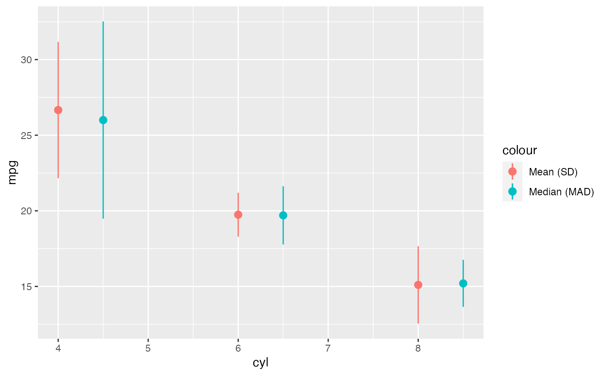

Sequence Generation Based on the Values of a Vector
Usage
seq_range(
x,
length.out = NULL,
by = NULL,
along.with = NULL,
na.rm = TRUE,
padding = 0.05
)
seq_quantile(
x,
probs,
length.out = NULL,
by = NULL,
along.with = NULL,
na.rm = TRUE
)
seq_IQR(x, length.out = NULL, by = NULL, along.with = NULL, na.rm = TRUE)
mean_sd(x, na.rm = TRUE, out = c("vector", "data.frame"))
median_mad(x, na.rm = TRUE, out = c("vector", "data.frame"))Arguments
- x
A numeric vector
- length.out
desired length of the sequence. If no other arguments are valued, defaults to 20.
- by
number: increment of the sequence.
- along.with
take the length from the length of this argument.
- na.rm
a logical evaluating to
TRUEorFALSEindicating whetherNAvalues should be stripped before the computation proceeds.- padding
Padding factor for the range.
- probs
numeric vector of probabilities with values in \([0,1]\). (Values up to 2e-14 outside that range are accepted and moved to the nearby endpoint.)
- out
If
"data.frame"can be used as a summary function inggplot2.
Examples
set.seed(1)
x <- rt(100, df = 3)
seq_range(x, length.out = 5)
#> [1] -8.0437647 -4.4893708 -0.9349769 2.6194170 6.1738109
seq_IQR(x, length.out = 5)
#> [1] -0.68605240 -0.32010195 0.04584849 0.41179894 0.77774938
seq_quantile(x, c(.05, .95), length.out = 5)
#> [1] -2.1238314 -0.9386960 0.2464393 1.4315747 2.6167101
mean_sd(x)
#> -SD Mean +SD
#> -1.549678560 0.003624249 1.556927057
library(ggplot2)
ggplot(mtcars, aes(cyl, mpg)) +
stat_summary(aes(color = "Mean (SD)"), fun.data = mean_sd,
fun.args = list(out = "data.frame")) +
stat_summary(aes(color = "Median (MAD)"), fun.data = median_mad,
fun.args = list(out = "data.frame"),
position = position_nudge(x = 0.5))
